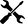
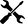
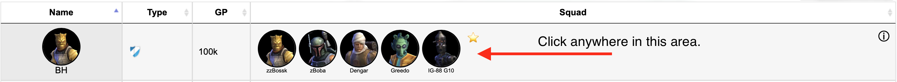
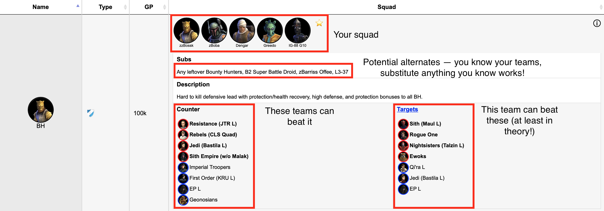

Please contact @gorgatron#3094 if you still have questions!
These squads are meant for use in TW and GA. The squads listed are all non-overalapping. This means that you can use all of them at once in a TW or a GA. Unlike other TW/GA/Counter resources you may have seen in the past, these pages are genereated specifically for you! They show your squads and won't suggest somethign that you don't have.
The squads that are marked as  are thought to be good defensive squads. If the team is marked with  you need to look closely at it before using it -- it may be under-geared. If the team has
are thought to be good defensive squads. If the team is marked with  you need to look closely at it before using it -- it may be under-geared. If the team has  this is a team that still needs gearing or farming.
this is a team that still needs gearing or farming.
You will see a list of teams like this:
You can click on the squad area or the ⓘ icon to see more details:
If you need additional gear, it will list that as well. Note: just because no additional gear is needed doesn't mean your team works well -- you may need more gear, more skills, better mods, etc. This is just what I programmed it to notice. These are your teams and you have the final judgement.
If you click on the squad leader icon on the far left, you will be taken to a page that shows what teams are good targets for this team, plus information about how to make those attacks.
These squads are meant for use in TW and GA. The list of squads is generated by producing defensive teams and then using up the rest of your toons in offensive counter squads. The squads listed are all non-overalapping. This means that you can use all of them at once in a TW or a GA.
The squads generally reflect the info from https://bobbybaxter.github.io/swgoh-counters/. This site has crowd sourced team and counter information from a variety of players and sources, including the counters bot.The data is pulled from swgoh.help, which is usually 24 hours behind current. I generate these pages every couple of days: the data is up to a week old.
If you look at the bottom of each of the generated pages (not the help pages), it has a date and time when it was generated.
These squads are meant for use in TW and GA. The list of squads is generated by producing defensive teams and then using up the rest of your toons in offensive counter squads. The squads listed are all non-overalapping. This means that you can use all of them at once in a TW or a GA.
You potentially have different squads available. These are the ones that my program has prioritized for TW/GA. If you look at the Counter page, you will find more squads listed: it considers every squad that it knows about.
The program is producing non-overlapping teams and it has to pick which character goes where. I have set priorities to assign them.
A good example would be GK when you have Padme and Jedi Knight Revan -- which one gets him? If you use Revan on defense, yoou probably want GK with him. If you use Revan on offense then you want GK with Padme and probably use Hermit Yoda with JKR. The program tries to figure out the best use of the toons and squads, but ultimately you know your teams better than the program does. Feel free to make substitutions and move things around: these are just suggestions.
If you think it made a mistake or have suggestions for improving it, please let me know. I will try and incorporate it if I can.
If you think it made a mistake or have suggestions for improving it, please let me know. I will try and incorporate it if I can.
The counter information is taken from https://bobbybaxter.github.io/swgoh-counters/ and is crowd sourced. I think it is accurate, but that doesn't mean your team can beat some random other team. Maybe you need better gear or mods? Maybe you need some particular technique? If you look on the counter and target pages you can see how it suggests you play them. Even then, there is no guarantee, just people think that these are good squads to use.